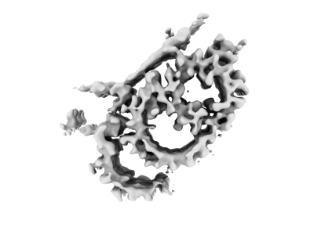

basal body inner scaffold
A proteinaceous meshwork lining the lumen-facing surface of the central basal-body wall and interconnecting neighboring triplet microtubules through multiple attachment sites. [DOI:10.1083/jcb.202311104]

NCBITaxon:5911) · Ruehle M, Li S, Agard DA, Pearson C; EMDB depositor representative figure, without copyright restrictions. · PUBLIC_DOMAIN · source: EMDB EMD-42777 · DOI:10.1083/jcb.202311104Part of: ciliary basal body (GO:0036064)
Components
| Component | Type | Part of / acts on | Grounding | Genes | Stoichiometry | Essential | Role |
|---|---|---|---|---|---|---|---|
| POC1 family protein | Protein | part of | Reviewed label only (reviewed name; no accession asserted) | POC1 | UNKNOWN | Anchors the scaffold at the central-core A-B inner junction. Its WD40 domain contacts an unidentified stem protein connecting toward the scaffold. This role does not assign Poc1 to the central-core B-C junction.
| |
| FAM161A family protein | Protein | part of | Reviewed label only (reviewed name; no accession asserted) | FAM161A | UNKNOWN | Inner-scaffold-associated constituent supported by endogenous-tag localization at the basal-body core and reduced basal-body signal after Poc1 loss. Its exact position within the scaffold and direct binding partners in Tetrahymena remain unassigned; additional distal localization is present.
|
Organism-specific protein examples
Named proteins in which each component's role was established, with the organism the evidence comes from. The component above is the taxon-agnostic family; these are the specific entries behind it.
POC1 family protein
| Accession | Protein | Gene | Organism | Entry |
|---|---|---|---|---|
UniProtKB:Q229Z6 | POC1 centriolar protein homolog | TTHERM_01308010 | Tetrahymena thermophila SB210 (NCBITaxon:312017) | REVIEWED |
Role and evidence (1 reference)Representative reviewed UniProtKB entry for gene POC1, which UniProt lists under the primary name TTHERM_01308010, in Tetrahymena thermophila SB210. Identifier for the component's declared gene symbol; it is not itself evidence that the protein is part of this structure.
| ||||
FAM161A family protein
| Accession | Protein | Gene | Organism | Entry |
|---|---|---|---|---|
UniProtKB:Q23CT1 | EF-hand domain-containing protein | TTHERM_00052590 | Tetrahymena thermophila SB210 (NCBITaxon:312017) | UNREVIEWED |
Role and evidence (1 reference)Representative unreviewed (TrEMBL) UniProtKB entry for gene FAM161A, which UniProt lists under the primary name TTHERM_00052590, in Tetrahymena thermophila SB210. Identifier for the component's declared gene symbol; it is not itself evidence that the protein is part of this structure.
| ||||
Canonical examples
NCBITaxon:5911Tetrahymena thermophila — Cryotomography of isolated wild-type and poc1-deletion basal bodies resolves the central-core scaffold and its attachments. Endogenous Fam161A tagging and fluorescence imaging provide complementary localization evidence. Methods list B2086 and SB1969 backgrounds; this example is species-level, not an asserted strain-specific pairing with SB210 reference sequences. [DOI:10.1083/jcb.202311104]
Functions
- intertriplet cohesion — Provides luminal connections between neighboring basal-body triplet microtubules in the central core. In the studied Tetrahymena material, backfitted reconstructions support stacked rings rather than a universal helical geometry.
DOI:10.1083/jcb.202311104Figure 5B-C and Figure S4E support the intertriplet meshwork and ring arrangement. This structural function does not assert a measured force threshold or selective scaffold-dependent rescue of basal-body shape.
Mechanism graphs
Poc1 anchors a luminal intertriplet scaffold (FUNCTION)
Structural contacts and a separately bounded localization dependency in the Tetrahymena basal-body central core.
| Subject | Predicate | Object | Evidence |
|---|---|---|---|
| POC1 family protein | binds at the A-B inner junction of | central-core basal-body triplet microtubules |
|
| POC1 family protein | contacts | unassigned A-B junction stem density |
|
| unassigned A-B junction stem density | connects toward | basal body inner scaffold (cellstructuremech:basal_body_inner_scaffold) |
|
basal body inner scaffold (cellstructuremech:basal_body_inner_scaffold) | interconnects | central-core basal-body triplet microtubules |
|
| POC1 family protein | supports normal levels of | basal-body Fam161A localization signal |
|
Discussions
- CURATION_TODO (RESOLVED): Distinguish the inner scaffold from adjacent basal-body structures. The imaged intertriplet meshwork is a physical entity, not a single protein or the whole basal body.
- CURATION_TODO (OPEN): Resolve exact POC1 and FAM161A family groundings without substituting broader families. A combined family or domain is not an exact identity for a narrower component class.
- CURATION_TODO (OPEN): Identify the stem and other attachment proteins and locate Fam161A within the scaffold. The two named classes are not a complete composition or a molecular model of every scaffold density.
- CURATION_TODO (RESOLVED): Do not import nearby proteins or human scaffold composition as demonstrated Tetrahymena constituents. Colocalization and evidence from another organism do not by themselves establish the same molecular placement.
- CURATION_TODO (RESOLVED): Keep mechanical interpretations and geometric measurements within their assay scope. Poc1 loss affects multiple modules, and preparation-induced deformation is not a direct in-cell force measurement.
Datasets
- Wild-type basal-body central-core triplet microtubule (
EMDB:EMD-42777) · OTHER · STRUCTURAL_IMAGING
Organism: Tetrahymena thermophila · Platform: cryo-electron tomography and subtomogram averagingReleased EMDB metadata, natural-source taxon 5911 and exact primary citation verified. Only metadata and the representative PNG are retained, not volume maps.
- Wild-type central-core A-B inner junction (
EMDB:EMD-42782) · OTHER · STRUCTURAL_IMAGING
Organism: Tetrahymena thermophila · Platform: cryo-electron tomography and focused subtomogram averagingReleased native EMDB metadata inspected; the reconstruction is a subregion, not whole-scaffold identity.
- Poc1-knockout basal-body central-core triplet microtubule (
EMDB:EMD-42784) · OTHER · STRUCTURAL_IMAGING
Organism: Tetrahymena thermophila · Platform: cryo-electron tomography and subtomogram averagingReleased native EMDB metadata inspected. Poc1 loss is pleiotropic and is not a selective ablation of only the inner scaffold.
Evidence
DOI:10.1083/jcb.202311104Ruehle et al. 2024. Official checksum-verified PMC11094743.1 JATS, core-region Results and Discussion, relevant Methods, tables and figure captions read. Figures 5, 6 and S4 inspected visually. No verbatim snippets are asserted.PMID:38743010Bibliographic identity verified against the official PMC and EMDB primary citations.
Curation history
2026-10-04T08:39:14Zcodex · CREATED_RECORD — Scaffolded by scripts/new_record.py2026-10-04T08:40:37Zcodex · EXPANDED_RECORD — Added bounded Tetrahymena inner-scaffold composition, structural-contact graph, EMDB datasets and licensed density preview; preserved unknown molecular assignments, assay scope and family-grounding uncertainty.2026-10-18T05:29:48Zclaude-opus-4-7 · EDIT — added 2 verified UniProtKB protein_example(s).2026-10-21T18:45:05Zcurate-causal-graphs-skill · UPDATED_CAUSAL_GRAPHS — Grounded self-referential causal node 'scaffold' to cellstructuremech:basal_body_inner_scaffold.
Source: data/structures/cytoskeleton/basal_body_inner_scaffold.yaml